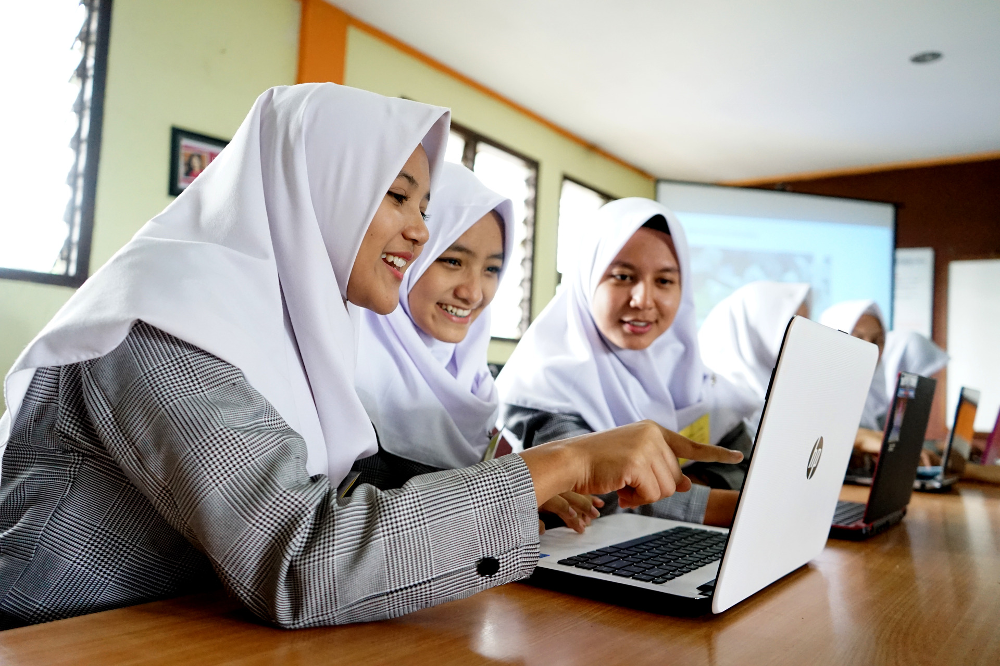

Jurusan
Selamat Datang di Website
Jurusan

| No | Nama Jurusan | Deskripsi |
|---|---|---|
| 1 | Pengembangan Perangkat Lunak dan Gim | mempelajari pemrograman, pembuatan aplikasi, serta pengembangan game. |
| 2 | Kuliner | mengajarkan cara mengolah makanan, teknik memasak, hingga penyajian yang menarik sesuai standar industri. |
| 3 | Perhotelan | fokus pada pelayanan tamu, manajemen hotel, serta keterampilan komunikasi dan hospitality. |
| 4 | Pemasaran | membekali siswa dengan kemampuan menjual produk, strategi bisnis, dan komunikasi dengan pelanggan. |
| 5 | Manajemen Perkantoran dan Layanan Bisnis | mempelajari administrasi, pengelolaan dokumen, serta pelayanan profesional di dunia kerja. |
| 6 | Desain Komunikasi virtual | mengajarkan pembuatan desain grafis, ilustrasi, dan media visual kreatif. |
| 7 | Teknik jaringan komputer dan telekomunikasi | fokus pada instalasi jaringan, perawatan komputer, dan sistem komunikasi digital. |